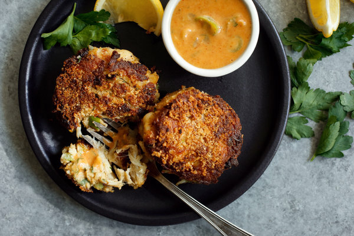

Crab Cakes Baltimore-Style
Originally from: NYTimes Cooking

Ingredients
- 2 large eggs, well beaten
- ½ cup chopped celery
- 1 cup crushed Saltine crackers
- 3 tablespoons mayonnaise
- 1 tablespoon Dijon-style mustard
- 1 teaspoon Old Bay Seasoning
- ¼ teaspoon red hot pepper flakes
- 2 teaspoons Worcestershire sauce
- 2 tablespoons finely chopped parsley sprigs
- ½ cup finely chopped scallions
- ½ teaspoon salt
- ¼ teaspoon freshly ground pepper
- 1 pound crab meat, lump preferred, shell and cartilage removed
- ½ cup finely ground fresh bread crumbs
- ¼ cup vegetable oil
Directions
- Combine eggs, celery, saltines, mayonnaise, mustard, Old Bay, pepper flakes, worcestershire, parsley, scallions, salt, and pepper. Mix well and then gently fold in crab meat.
- Divide mixture into 12 portions, shape into cakes, then dredge in breadcrumbs.
- Heat oil in skilled over medium heat. Sauté crab cakes 2-3 minutes on each side or until golden brown.
Notes
-
2021-02-14 - Made with Phillips Claw Meat and halved the recipe, which made a good amount for 2 people. Recipe turned out well, lets crab be center of dish so depends on having nice quality crab. The meat I used was fine for "canned" crab and held up well enough when making the cakes.